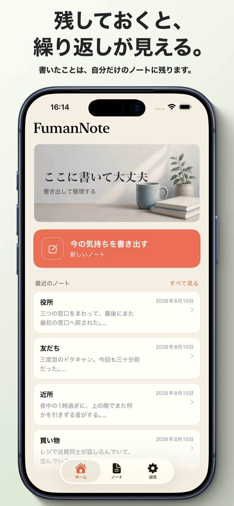

言ってほしかった言葉を、
代わりに書きます。
腹が立ったことを、そのままの言葉で書き出すノートです。書いたものを、相手が本当は言うべきだった言葉に書き直します。謝ってもらえなかった相手の代わりに。

相手の一人称で返ってくる
「本当はこう言ってほしかった」を、相手の立場から書きます。何が起きたかを認め、事情を説明し、非を認めるところまで。書いた人の感情を否定しません。

うまく言えなくていい
整った言葉である必要はありません。誰にも見せないので、思ったままの言い方で書けます。1行目に日付を書けば、その日の記録として扱われます。

押したときだけ調べる
怒りの強さ、その下にあった気持ち、大事にしていた前提。決めつけではなく、書かれた文章から読み取れた範囲で示します。自動では走りません。

自分だけで動ける一歩
相手に期待することは書きません。記録の残し方、次に同じことが起きたときの伝え方など、自分の意思だけで実行できることを並べます。

開くたび、すぐ書ける
腹が立った瞬間に開くものなので、書き始めるまでを最短にしてあります。過去のノートは下に並び、同じ相手や場面が繰り返していれば、それも見えます。
気の利いた言い換えでは
ありません。
書いた不満を、相手の一人称で書き直します。何が起きたのかを認め、こちら側の事情を説明し、それを言い訳にせず非を認める。相手がそう言ってくれていたら、こじれずに済んだはずの言葉です。
まずそのままの言葉で書けることを大事にしています。丁寧に書き直す必要も、誰かに見せる必要もありません。整えるのは、書き終わってからで足ります。
頼まない限り、
何も言いません。
書いた直後に「あなたはこういう前提を持っています」と返されても、説教にしかなりません。だから自分からは出しません。「この怒りについて調べる」を押したときだけ、整理して返します。
相手の言い分だけが表示されます。分析も、助言も、評価も出しません。
そのとき何に引っかかっていたのか、その下にどんな気持ちがあったのか、いま自分で動かせる範囲はどこかを表示します。
違うのは、回数だけです。
無料と有料で、書き直しの質は変わりません。変わるのは月に使える回数だけです。使い切っても、簡易版に切り替わって書き続けられます。アプリが使えなくなることはありません。
0円
- ノートは無制限に書ける
- 書き直しは最初の10回まで（お試し）
- 使い切ると簡易版に切り替わる
月額300円
月300回まで（通常200回 → ローンチ特典で1.5倍）
- 1日10回に相当する枠
- 上限に達しても簡易版で書き続けられる
- 自動更新・いつでも解約できる
- 解約は iOS の設定アプリから
正直に書いておくこと
気持ちの整理を助ける道具であって、症状を診断したり治したりするものではありません。つらさが続くときは、医療機関や相談窓口を頼ってください。
書き直しは外部のAIサービスで行われるため、本文が送信されます。実名や社名を書いた場合、それも送られ、生成された文章にもそのまま残ります。共有する前に必ず確認してください。詳細はプライバシーポリシーにあります。